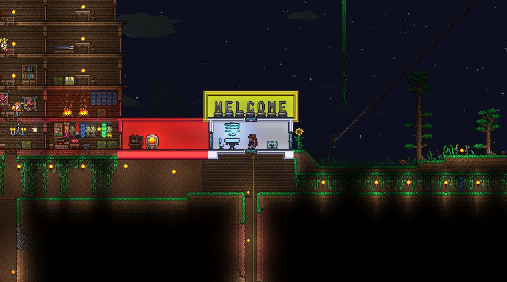
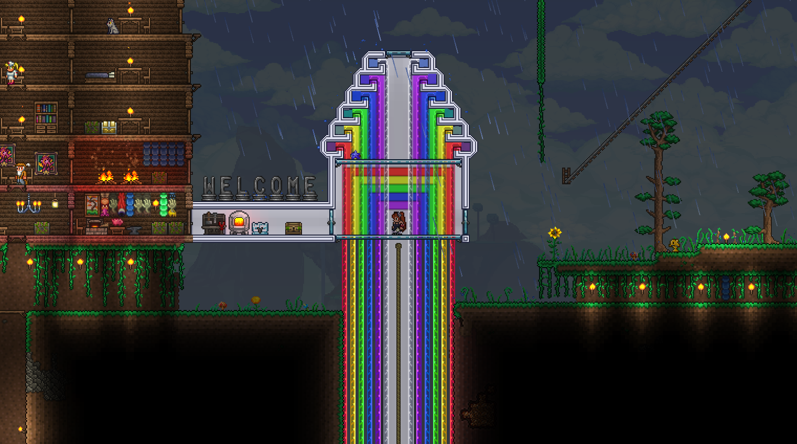
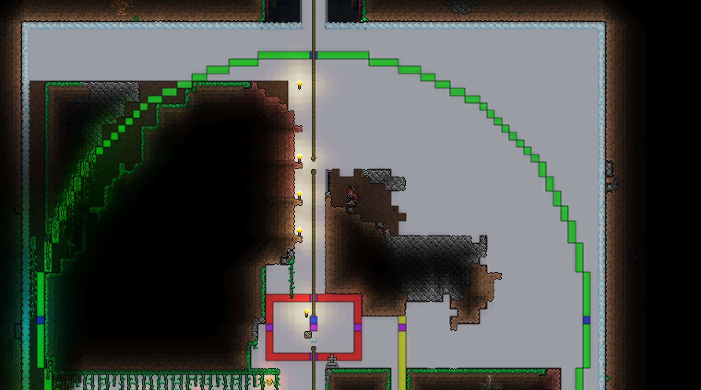
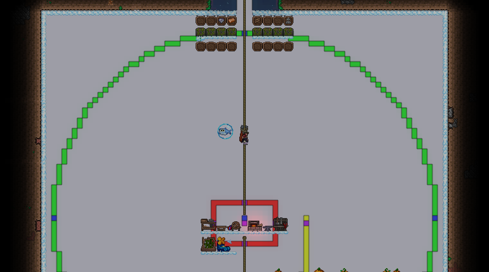

With my gem tree farm yielding incredible dividends I quickly made everybod diamond staffs, robes, and hooks, with plenty left over.
So I decided to make some stuff out of gemspark, which is one of my favorite building materials in the game, on account of its glow effect.
I also think it's cool that it can color water, so I made a really pretty rainbow fountain around the spawn point.
Additionally, I decided I kind of hated where Kris built his crafting square thing so I moved it right below the spawn point and also made it out of gemspark.
Rather than gems being the difficult thing to acquire, it was actually glass that was the more annoying resource. Emi and I completely and utterly destroyed the desert in pursuit of bringing home all of its sand.




I also turned on Permanent Christmas and Halloween so we could get all of those rare drops from presents and goodie bags.
I mostly just played by myself for the first half of the week, I wanted to have time to setup my gemspark fountain and organize all of our stuff.
I also wanted to give Emi some time to familiarize herself with the game without the whole group present to make up for her terrible first day so she, Rose, and I spent Wednesday playing together.
We also finally found the angler and started getting going on fishing. Kristian's been making fishing pools all over the map and giving me and Rose extra catches often. He's our MVF (Most Valuable Fisherman)
While doing that he also found... some cool weird new summon?